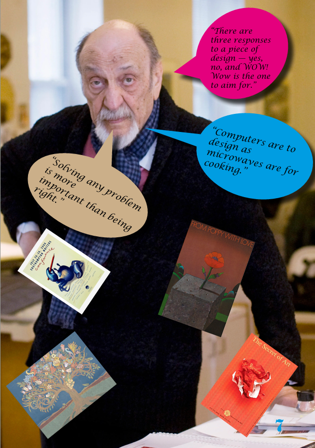
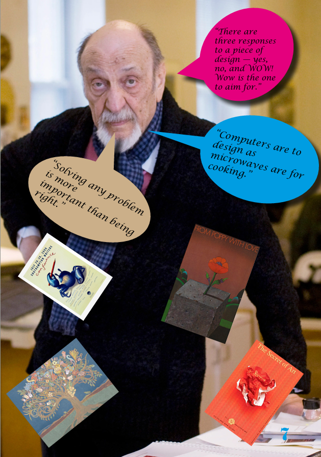
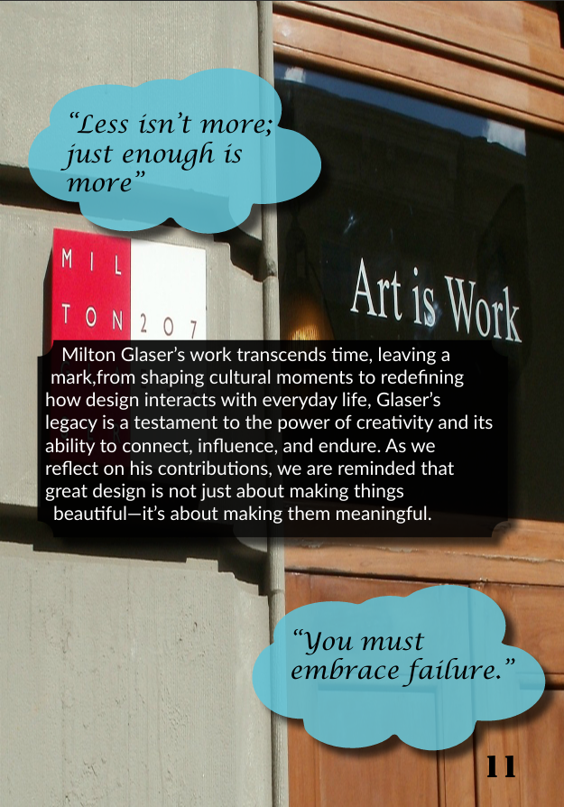
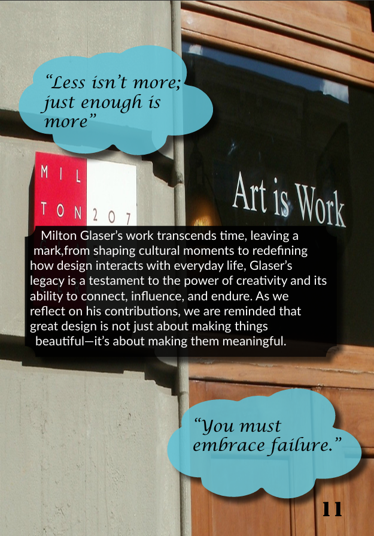

Booklet Design – Milton Glaser
Project Brief
This project required the creation of a 12-page editorial booklet exploring the influence and legacy of a chosen graphic designer. For my booklet, I focused on Milton Glaser.
The aim was to research Glaser’s role in graphic design history, the visual language that defines his work, and how his style has influenced design culture. The final booklet was designed as a narrative with clear progression from start to end, applying key principles such as grid, typography, hierarchy, balance, white space, and colour.
Moodboard & Visual Research
My moodboard was built using a collection of Milton Glaser’s poster work. I analysed recurring themes such as bold colour choices, expressive typography, and iconic illustration styles. I also explored colour palettes inspired by his most well-known designs.
Concept Sketches
Initial sketches were created to explore layout options, page flow, and composition. These helped plan how the booklet would progress as a narrative while maintaining a consistent visual rhythm.

Own Design Development
My design development focused on translating Milton Glaser’s legacy into my own editorial design style. I created pages inspired by his iconic Bob Dylan poster, experimenting with colour, silhouette, and strong graphic contrast.
One of my key pages was inspired by the Cooperstown Chamber Music Festival, reflecting Glaser’s ability to combine expressive typography with a structured layout. I also produced additional pages that explored variations of the Dylan-inspired visual style.
Final Booklet
The final outcome is presented as double-page spreads to reflect the intended reading experience of a printed booklet.
 

 
